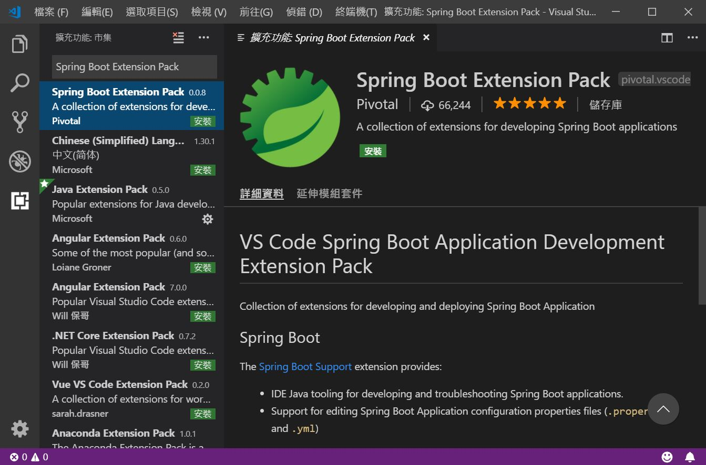
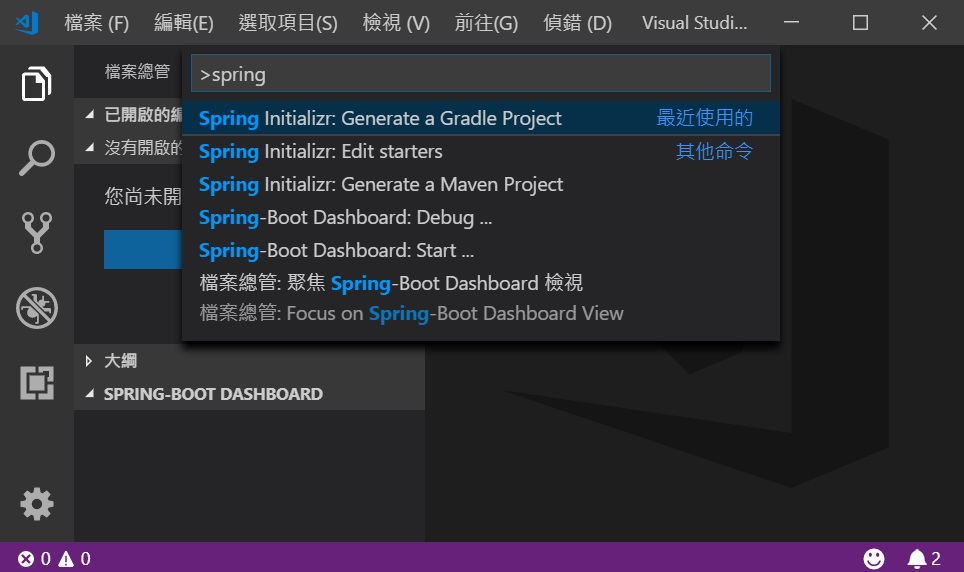
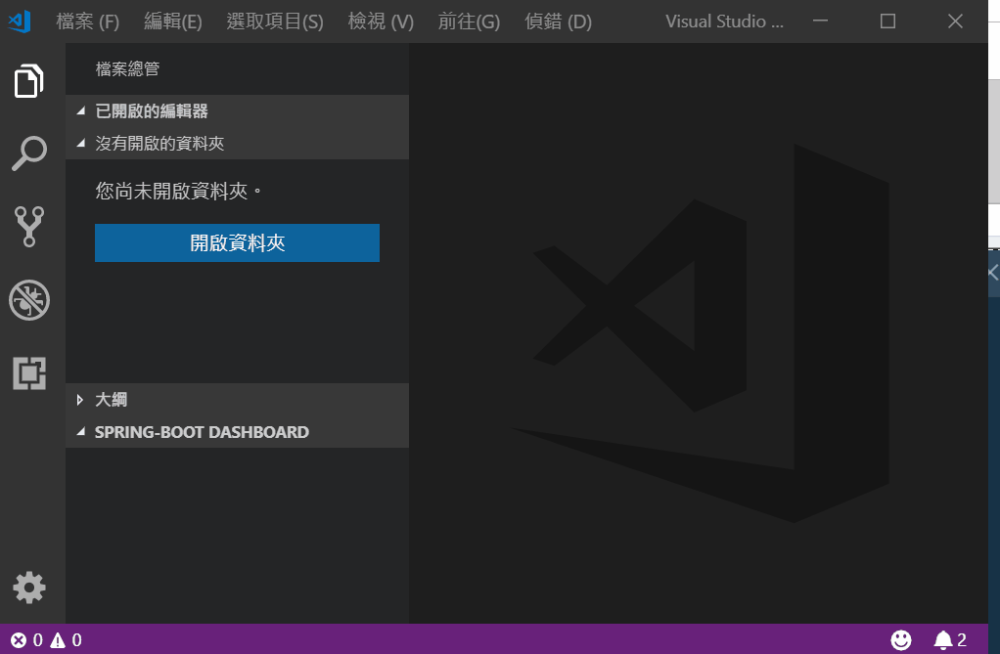
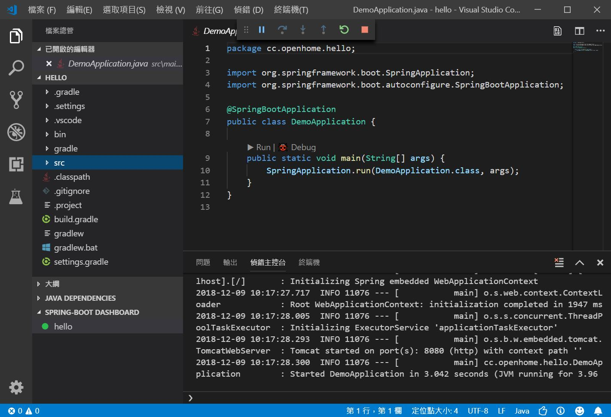

如果你使用 Visual Studio Code，Spring Tool 4 目前也提供了 Spring Boot Extension Pack，相對於使用重量級的 Spring Tool Suite，在 Visual Studio Code 這種編輯器以上、IDE 未滿的開發工具裏編寫 Spring Boot 專案，感覺會比較輕快一些。

你可以如上圖在 Visual Studio Code 的市集裡，搜尋、安裝 Spring Boot Extension Pack，由於它包含了數個 Extension，安裝過程會需要些時間。
安裝完重新載入或重新啟動 Visual Studio Code，可以執行「檢視/命令選擇區」或快捷鍵 Ctrl + Shift + P 開啟命令選擇器，輸入 spring，就可以選擇 spring initializr：

接下來就用動畫展示了：

在最後儲存專案資料夾之後，就可以使用 Visual Studio Code 開啟該資料夾，接下來就可以在其中編寫程式了，想要運行專案的話，可以在 SPRING-BOOT DASHBOARD 中選擇專案並啟動：
